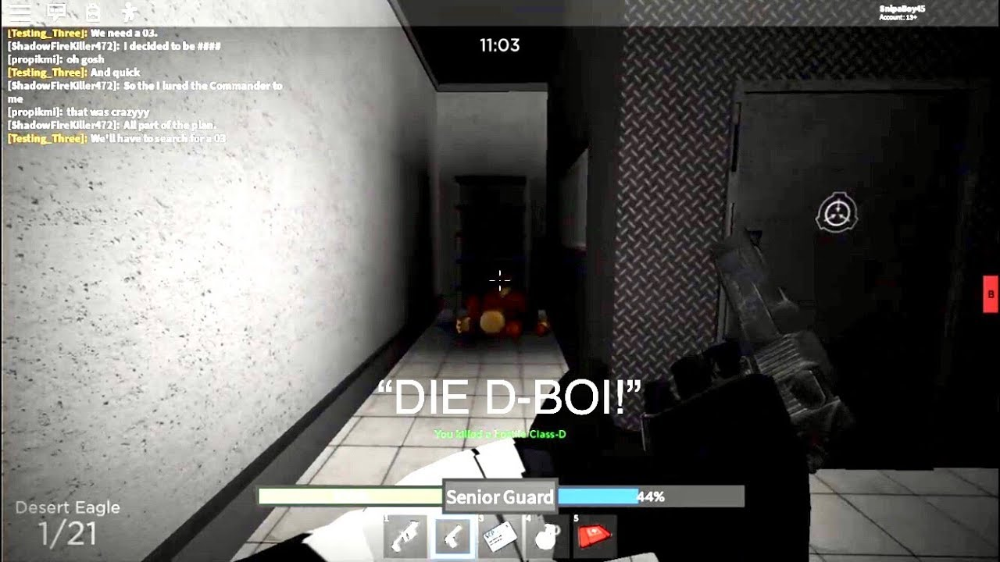

Roles
In SCP rBreach there are many diffrent roles:
- Foundation personal
- MTF(Mobile Task Forse)
- Class D
- SCPs
- Serpent's Hand
- Chaos Insergency(CI)
- UNGOC
- Security Detail
- FBI/UIU
- GRU-P
.jpg)
Foundation personal and Class D
As personal you may be scientist, janitor, engineer, or doctor. You must survive the Containment Breach and escape the foundation. Forces will help you. Avoid SCPs, Serpent`s Hand, CI(Chaos Incergency). GRU, UNIGOC and class-D are netural( they can also kill you). You will need lvl. 3 card. Do not go to 914. Just find this keycard. As class-D, also don`t go to 914, becase SCPs can easily find you here. Find lvl. 2 keycard, then get lvl. 3. If you find CI, they will help you to escape. Personal is netural. Someone else are hostile.
.jpg)
MTF, Ci and Security Detail
CI, MTF and Security Departament are diffrent forces. CI must terminate SCPs, personal, and other forces they see. They must help remaining Class-D. Among them can spawn Delta Command. He`s got better weapon. MTF must terminate SCPs, CI, Serpent`s Hand, class-D and help personal. There are a lot of diffrent MTF types like "Nine Tailed Fox", "Savege Beast", "Fire Eaters" and other. Security Departament has got Lietinant, Commander, Senior Guard and Guard. They have diffrent weapon and keycards. They have to help remaining foundation personal.
GRU-P, UNGOC, UIU, FBI
Passive fractures. As them will be wise to join netural forces.
Serpent's Hand
They are only friendly to SCPs. Help weak SCPs to escape and team up with strong then slash as many enimies as you can!